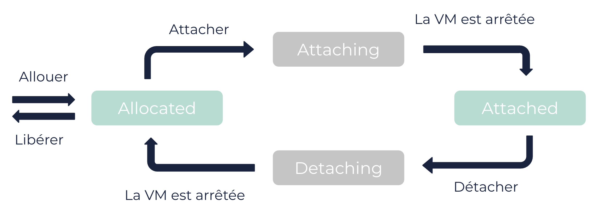

À propos des flexible GPU
Les flexible GPU (fGPU) sont des ressources Cloud utilisées pour le rendu graphique et les calculs parallèles lourds. Vous pouvez allouer des fGPU à votre compte et les attacher ou détacher de vos machines virtuelles (VM).
Informations générales
Un fGPU est une ressource qui peut être allouée à votre compte et attachée ou détachée de vos VM. Vous pouvez attacher 2 fGPU à la même VM si ces fGPU sont du même modèle.
Un fGPU peut être dans l’un des états suivants :
-
allocated: Le fGPU est réservé pour votre compte. -
attaching: L’attachement du fGPU à une VM est prévu. Vous devez arrêter la VM pour faire passer le fGPU à l’étatattached. -
attached: Le fGPU est utilisé par la VM. Il est considéré comme un périphérique connecté à la VM. -
detaching: Le détachement du fGPU est prévu. Vous devez arrêter la VM pour faire passer le fGPU à l’étatallocated.

|
Lorsque vous attachez un fGPU, la VM doit respecter les conditions suivantes (voir le tableau des modèles de fGPU ci-dessous) :
En outre, la VM ne doit pas être une VM dédiée. |
Modèles de fGPU
3DS OUTSCALE fournit différents modèles de fGPU, avec différentes quantités de RAM vidéo (VRAM) :
| Modèle de fGPU | VRAM du fGPU (en Mio) | Nombre maximum de vCores | Quantité maximum de mémoire (en Gio) | Générations de processeur compatibles | Régions |
|---|---|---|---|---|---|
nvidia-a100 |
40000 |
35 |
250 |
v5, v6 |
|
nvidia-a100-80 |
80000 |
35 |
256 |
v6 |
|
80000 |
35 |
256 |
v6, v7 |
|
|
nvidia-k2 |
4096 |
80 |
512 |
v3, v4 |
|
nvidia-l40 |
48000 |
35 |
250 |
v7 |
|
nvidia-m60 |
16000 |
80 |
512 |
v3, v4 |
|
nvidia-p6 |
16000 |
80 |
512 |
v5 |
|
nvidia-p100 |
16000 |
80 |
512 |
v5 |
|
nvidia-v100 |
16000 |
35 |
250 |
v5 |
|
|
Pour vous assurer d’avoir la liste de valeurs la plus à jour, utilisez la méthode API |
Conversion de type de VM
Comme pour toute VM, vous pouvez modifier le type d’une VM ayant des fGPU attachés. Cependant, le nombre de fGPU attachés peut être incompatible avec le nouveau type de VM (nombre de vCores, quantité de mémoire, génération de processeur). Il se produit différents comportements selon les types de VM :
| Ancien type | Nouveau type | Comportement à la conversion |
|---|---|---|
AWS |
AWS |
Tous les fGPU attachés à la VM sont supprimés. Puis, autant de fGPU que possible sont créés et attachés à la VM convertie. |
AWS |
TINA |
Tous les fGPU attachés à la VM sont supprimés. |
TINA |
AWS |
Tous les fGPU attachés à la VM sont détachés. Puis, autant de fGPU que possible sont créés et attachés à la VM convertie. |
TINA |
TINA |
Si tous les fGPU attachés à la VM sont compatibles avec le nouveau type de VM, la VM est convertie. Sinon, une erreur |
Pour en savoir plus sur la modification des types de VM, voir Modifier un attribut d’une VM.
Pages connexes
Méthodes API correspondantes
AWS™ et Amazon Web Services™ sont des marques de commerce d'Amazon Technologies, Inc. ou de ses affiliées aux États-Unis et/ou dans les autres pays.